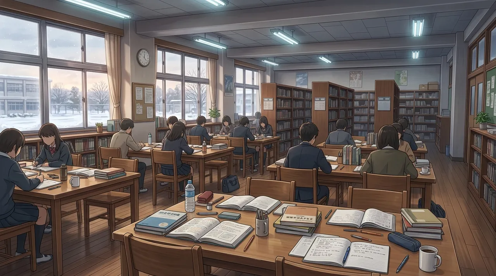

Révisions en bibliothèque — la fatigue qui s'accumule

Le 12 janvier, en pleine période de révisions, la bande travaille à la bibliothèque. Ilona n'a pas dormi, a un peu maigri et feuillette les mêmes pages sans les lire ; Alexandre présente un planning de révisions dessiné comme un bâtiment « techniquement inhabitable ». Selon la fin de l'Arc IV, la narration évoque ses sourires fatigués, l'écharpe de Noël jamais portée, ou le fait qu'elle construit désormais hors de la maison Minecraft. Si Ilona a marché avec Théo après Noël, sa présence est décrite comme plus installée (accepte), tenue à distance (prudente) ou interrogée (directe) ; dans le cas « accepte » avec un projet de stream évoqué, Ilona a aussi parlé de streamer (pression_stream +1).
Théo arrive avec des cafés et apporte à Ilona exactement le thé qu'elle prend quand elle est à bout. Elle se détend en trente secondes ; Jessy se sent inutile. Sa réaction (vérifier, compenser, remercier ou se taire) donne le ton. Monsieur Laplage traverse ensuite la bibliothèque avec un badge « Consultant en Entropie Émotionnelle » et lance à Ilona : « Les étoiles qui ne se reposent jamais finissent par s'effondrer sur elles-mêmes. »
Ilona rentre seule. Allan demande à Jessy combien elle dort et s'il lui a posé la question : Jessy peut esquiver ou admettre qu'il a peur de vouloir la « réparer ». En partant, il ramasse un stylo violet à étoiles oublié par Ilona et se promet de le lui rendre le lendemain.
Choix
Le gobelet de thé est là, entre les mains d'Ilona. Théo attend, détendu, comme quelqu'un qui sait qu'il a fait la bonne chose.
- « Demander à Ilona si elle voulait vraiment ce thé-là. » → autonomie_ilona -4, confiance -4, influence_theo +2, jalousie +6, lien_jessy_ilona -2, controles +1, arc5_tension_accumulee +2, interruptions_ilona +1 (Ilona : « Tu ne demandes pas. Tu vérifies. »)
- « Proposer d'aller chercher autre chose, quelque chose de personnel. » → autonomie_ilona -4, confiance -4, influence_theo +2, jalousie +6, lien_jessy_ilona -2, controles +1
- « Remercier Théo sincèrement. » → communication +4, confiance +2, jalousie -2 (plancher 0), lien_jessy_ilona +2
- « Ne rien dire. Avaler la pilule. » → communication -4, confiance -2, pression_stream +2, evitements +1, arc5_tension_accumulee +1
Allan attend. Alexandre aussi. Même Théo, de sa table, semble écouter.
- « Changer de sujet. Parler des examens. » → communication -2, confiance -1, pression_stream +1, evitements +1, arc5_tension_accumulee +1
- « Dire qu'il lui fait confiance pour gérer. » → communication -2, confiance -1, pression_stream +1, evitements +1 (le script le traite comme un mensonge)
- « Admettre qu'il ne lui a pas demandé parce qu'il avait peur de la réponse. » → communication +2, confiance +1, jalousie -1 (plancher 0), lien_jessy_ilona +1
Conséquences
- Le stylo violet ramassé ici n'est jamais rendu pendant l'arc ; il ouvre l'Arc VI (arc_6_diplomes.rpy:178).
- interruptions_ilona, controles et evitements alimentent etat_relation() (script.rpy:283), figé en scène 5, puis le verdict de l'Arc VI (arc_6_diplomes.rpy:44-84).
- arc5_tension_accumulee est relue en scène 4 (seuils 3 et 4) et dans l'Arc VI (arc_6_diplomes.rpy:1236, seuil 8).